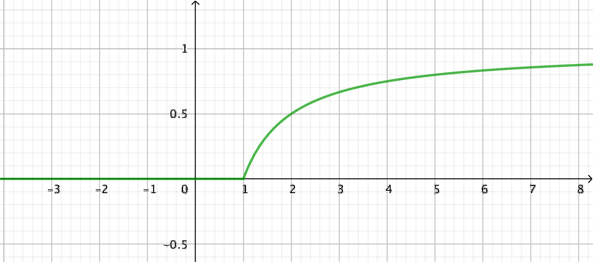

17. Statistik och integrering
Vi började med att undersöka längder hos människor, och kom fram till att de följer normalfördelningen. Som vårt sista steg skall vi se hur vi kan sammanknyta statistiken med integrering.
När vi avläser tabellvärden för normalfördelningen så får vi fram arean under funktionen fram till en bestämd punkt. Det som vi får fram är värdet för fördelningsfunktionen, \( \Phi(x) \), fram till en bestämd punkt. Fördelningsfunktionen ger hur stor andel, hur många procent, som gäller fram till punkten i fråga.
Då vi deriverar fördelningsfunktionen, \( \Phi(x) \), kommer vi åt den funktion som ger frekvensen, antalet, för ett utkast. Den funktionen heter täthetsfunktion. Täthetsfunktionen för normalfördelningen är, \( f(x)=\dfrac{1}{\sigma \sqrt{2\pi}}e^{-\dfrac{(x-\mu)^2}{2\sigma ^2}} \).
Beroende på värdena på \( \mu \) och \( \sigma \) ser grafen av normalfördelningens täthetsfunktion lite olika ut. På \( x \)-axeln har vi det som undersöks medan \( y \)-axeln ger frekvensen, som procent.

Då vi integrerar täthetsfunktionen får vi fördelningsfunktionen. Fördelningsfunktionen för de fyra fallen ovan är ritade i bilden nedan (färgerna är samma som i bilden ovan).

Åter igen har vi på \( x \)-axeln har vi det som undersöks medan \( y \)-axeln ger kumulativa frekvensen, som procent.
För att funktionen \( f \) skall vara en täthetsfunktion för en stokastisk variabel \( X \) så skall följande gälla.
- \( f(x) \geq 0 \) för alla \( x \in \mathbf{R} \).
- Arean som begränsas av \( f \) och \( x \)-axeln skall ha värdet 1.
Exempel 1 Funktionen \( f(x)= \left\{ \begin{array}{ll}ax & , \text{ när } 0 \leq x \leq 4 \\ 0 & , \text{ annars}\end{array} \right. \) är täthetsfunktionen för en stokastisk variabel \( X \).
- Bestäm värdet på konstanten \( a \).
- Beräkna sannolikheten att \( P(1 \leq X \leq 2) \).
Lösning
För att \( f \) skall vara en täthetsfunktion så skall bägge villkor uppfyllas.
Det första är att \( f(x) \geq 0 \) för alla \( x \). Det sker för \( ax \) då \( a \geq 0 \).
För att \( f(x) \) skall vara en täthetsfunktion så skall arean av området från 0 till 4 ha värdet 1. Alltså \( \displaystyle\int_0^4 ax \,\text{d}x =1 \). Vi får att \( a=\dfrac{1}{8} \).
Funktionen är alltså \( f(x)= \left\{ \begin{array}{ll}\dfrac{1}{8}x & , \text{ när } 0 \leq x \leq 4 \\ 0 & , \text{ annars}\end{array} \right. \)
Då vi bestämmer \( P(1 \leq X \leq 2) \) får vi
\( P(1 \leq X \leq 2) = \displaystyle\int_1^2 \dfrac{1}{8}x \,\text{d}x = \dfrac{3}{16} \approx 0,1875 \). Alltså 18,8 %.
Exempel 2 Fördelningsfunktionen för en stokastisk variabel är
\( F(X) = \left\{ \begin{array}{ll} 0 & \text{, när } x < 0 \\ 2^{\frac{1}{3}x}-1 & \text{, när } 0 \leq x \leq 3 \\ 1 & \text{, när } x > 3 \\ \end{array} \right. \)
Bestäm följande sannolikheter.
- \( P(X\leq 2) \)
- \( P(X > 1) \)
- \( P(1 < X < 3) \)
Lösning
Vi får
\( P(X\leq 2) = F(2) = 2^{\frac{1}{3}\cdot 2} -1 = 2^{\frac{2}{3}} -1 = 0,58740\ldots\)
Alltså 0,59.
- \( P(X > 1) = 1 - P(X < 1) = 1 - F(1) = 1 - (2^{\frac{1}{3}\cdot 1} -1) = 0,74007\ldots \)
Alltså 0,74.
- \( P(1 < X < 3) = F(3) - F(1) = (2^{\frac{1}{3}\cdot 3} -1)-(2^{\frac{1}{3}\cdot 1} -1) = 2 - 2^{\frac{1}{3}} = 0,74007\ldots \)
Alltså 0,74.
Sammanfattning
När vi integrerar täthetsfunktionen får vi fram fördelningsfunktionen.
Deriverar vi fördelningsfunktionen får vi fram täthetsfunktionen.
Uppgifter
Funktionen
\( f(x)=\left\{ \begin{array}{ll} kx, & \text{ då } 0 \leq x \leq 6 \\ 0, & \text{ annars} \\ \end{array} \right. \)
är täthetsfunktionen för en stokastisk variabel X.
- Bestäm värdet på konstanten \( k \).
Eftersom \( f \) skall vara en täthetsfunktion så skall kriterierna gälla.
\( kx \geq 0 \) då \( k\geq 0 \).
Det andra villkoret är att \( \displaystyle\int_0^6 ax \text{ d}x = 1 \). Lösningen på ekvationen får vi via räknare eller för hand, \( \bigg/_0^6 ax^2=1 \Leftrightarrow a = \dfrac{1}{18} \).
Alltså \( f(x)=\left\{ \begin{array}{ll} \dfrac{1}{18}x, & \text{ då } 0 \leq x \leq 6 \\ 0, & \text{ annars} \\ \end{array} \right. \)
- Bestäm sannolikheten \( P(0 \leq X \leq 2) \).
Vi får \( \displaystyle\int_0^2 \dfrac{1}{18}x \text{ d}x = \dfrac{1}{9}\approx 0,111 \).
- Bestäm värdet på konstanten \( k \).
Funktionen
\( f(x)=\left\{ \begin{array}{ll} ax^2, & \text{ då } 0 \leq x \leq 3 \\ 0, & \text{ annars} \\ \end{array} \right. \)
är täthetsfunktionen för en stokastisk variabel X.
- Bestäm värdet på konstanten \( a \).
Eftersom \( f \) skall vara en täthetsfunktion så skall kriterierna gälla.
\( ax^{2} \geq 0 \) då \( a\geq 0 \).
Det andra villkoret är att \( \displaystyle\int_0^3 ax^{2} \text{ d}x =1 \). Det sker då \( a = \dfrac{1}{9} \). (Försäkra dig över detta!)
Alltså \( f(x)=\left\{ \begin{array}{ll} \dfrac{1}{9} x^{2}, & \text{ då } 0 \leq x \leq 3 \\ 0, & \text{ annars} \\ \end{array} \right. \)
- Bestäm sannolikheten \( P(2 \leq X \leq 3) \).
Vi får \( \displaystyle\int_2^3 \dfrac{1}{9} x^{2} \text{ d}x = \dfrac{19}{27} \approx 0,704 = 70,4 \% \).
- Bestäm värdet på konstanten \( a \).
Funktionen
\( f(x)=\left\{ \begin{array}{ll} 0, & \text{ då } x < 0 \\ ax^2, & \text{ då } 0 \leq x \leq 1 \\ 0, & \text{ då} x > 1 \\ \end{array} \right. \)
är täthetsfunktionen för en stokastisk variabel X.
- Bestäm värdet på konstanten \( a \).
Eftersom \( f \) skall vara en täthetsfunktion så skall kriterierna gälla.
\( ax^{2} \geq 0 \) då \( a\geq 0 \).
Det andra villkoret är att \( \displaystyle\int_0^1 ax^{2} \text{ d}x =1 \). Det sker då \( a = 3 \). (Försäkra dig över detta!)
Alltså \( f(x)=\left\{ \begin{array}{ll} 0, & \text{ då } x < 0 \\ 3x^2, & \text{ då } 0 \leq x \leq 1 \\ 0, & \text{ då} x > 1 \\ \end{array} \right. \)
- Bestäm fördelningsfunktionen \( F(x) \).
Vi skall integrera \( f(x) \).
Vi får
\( f(x)=\left\{ \begin{array}{ll} 0, & \text{ då } x < 0 \\ x^3, & \text{ då } 0 \leq x \leq 1 \\ 1, & \text{ då} x > 1 \\ \end{array} \right. \)
- Bestäm sannolikheten \( P(X > 0,67) \).
Vi får \( P(X > 0,67) = 1 - P(X < 0,67) = 1 - F(0,67) = 1- 0,67^3 = 0,699237 \approx 70,0 \% \).
- Bestäm värdet på konstanten \( a \).
Fördelningsfunktionen för en stokastisk variabel är
\( F(x)=\left\{ \begin{array}{ll} 0, & \text{ då } x\leq -1 \\ 2^{x-5}, & \text{ då } -1 < x \leq 4 \\ 1, & \text{ då } > 4\\ \end{array} \right. \)
Bestäm
- \( P(X \leq 0) \)
Vi får
\( \begin{array}{rcl} P(X \leq 0 ) & =& F(0) \\ & =& 2^{0-5} \\ & =& 2^{-5} = \dfrac{1}{32} =0,03125 \approx 0,031 \\ \end{array} \)
- \( P(X \geq 3) \)
Vi arbetar med komplementhändlsen. Vi får
\( \begin{array}{rcl} P(X \geq 3 ) & =& 1-P(X \leq 3 ) \\ & =& 1-F(3) \\ & =& 1-2^{3-5} \\ & =& 1-2^{-2} = 1-\dfrac{1}{4} =0,75 \\ \end{array} \)
- \( P(1 \leq X \leq 3) \)
Vi får
\( \begin{array}{rcl} P(1 \leq X \leq 3) & =& F(3)-F(1) \\ & =& 2^{3-5} - 2^{1-5} \\ & =& 2^{-2} - 2^{-4} \\ & =& \dfrac{1}{4}-\dfrac{1}{14} = 0,1875 \approx 0,188 \\ \end{array} \)
- \( P(X \leq 0) \)
- Täthetsfunktionen för en stokastisk variabel \( X \) är
\( f(x) = \left\{ \begin{array}{ll} \dfrac{3}{1000}x^2 & ,\text{ när } 0 \leq x < 10 \\ 0 & , \text{ annars} \\ \end{array} \right. \)
- Bilda fördelningsfunktionen för den stokastiska variablen \( X \).
Genom att integrera täthetsfunktionen kommer vi till fördelningsfunktionen.
Vi får
\( F(x) = \left\{ \begin{array}{ll} 0 & , \text{ när } x < 0\\ \dfrac{1}{1000}x^3 & ,\text{ när } 0 \leq x < 10 \\ 1 & , \text{ när} x > 10 \\ \end{array} \right. \)
- Beräkna sannolikheten \( P(X < 6) \).
Vi får \( F(6) = \dfrac{1}{1000}\cdot 6^3 = \dfrac{27}{125} = 0,216 \)
- Bestäm sannolikheten \( P( 2 \leq X \leq 9) \)
Vi får \( P( 2 \leq X \leq 9) = F(9) - F(2) = \dfrac{1}{1000}\cdot 9^3 - \dfrac{1}{1000}\cdot 2^3 = \dfrac{721}{1000} = 0,721 \).
- Bilda fördelningsfunktionen för den stokastiska variablen \( X \).
- Fördelningsfunktionen för en kontinuerlig stokastisk variabel X är
\( F(x) = \left\{ \begin{array}{ll} 0 & ,\text{ när } x \leq 1 \\ 1-\dfrac{1}{x} & , \text{ när } x > 1 \\ \end{array} \right. \)
- Rita funktionen \( F(X) \).
På GeoGebra får vi

För att få funktionerna styckevis definierade så jobba med kommandot funktion().
- Bestäm sannolikheterna \( P(X \leq 1,5) \), \( P(2 \leq X \leq 4) \) och \( P(X > 2) \).
Vi får
\( P(X \leq 1,5) = 1-\dfrac{1}{1,5} = 0,33\ldots \). Alltså 0,33.
\( P(2 \leq X \leq 4) = 1-\dfrac{1}{4} - (1-\dfrac{1}{2}) = 0,25 \). Alltså 0,25.
\( P( X > 2) = 1-P(X \leq 2) = 1 - (1-\dfrac{1}{2}) = 0,50 \). Alltså 0,50.
- Rita funktionen \( F(X) \).
- Ett tåg avgår var 10 minut mot centrum. Låt den stokastiska variabeln X vara "Väntetiden i minuter för en slumpmässig resenär som kommer en slumpmässig tid till stationen".
- Bilda täthetsfunktionen för den stokastiska variabeln X.
Eftersom tåget avgår varje 10:e minut är intervallet \( 0 \leq x \leq 10 \).
Täthetsfunktionen är då av formen
\( f(x)= \left\{ \begin{array}{ll} p, & \text{ då } 0\leq x \leq 10 \\ 0, & \text{ annars} \\ \end{array}\right. \)
Då skall vi se till att bägge villkor för en täthetsfunktion uppfylls.
\( f(x) \leq 0 \) då \( p\geq 0 \).
Arean av området skall ha värdet 1, alltså \( \displaystyle\int_0^{10} p \text{ d}x = 1 \). Det sker då \( p=\dfrac{1}{10} \). (Försäkra dig över detta!)
Alltså, täthetsfunktionen är
\( f(x)= \left\{ \begin{array}{ll} \dfrac{1}{10}, & \text{ då } 0\leq x \leq 10 \\ 0, & \text{ annars} \\ \end{array}\right. \)
- Bilda fördelsningsfunktionen för den stokastiska variabeln X.
Fördelningsfunktionen är den funktion som begränsas av grafen till täthetsfunktionen \( f \) och \( x \)-axeln i intervallet \( ]-\infty , t] \) för alla variabelvärden \( t \).
Med andra ord får vi \( F(t)=P(X\leq t) = \displaystyle\int_0^t \dfrac{1}{10} \text{ d}x = \dfrac{1}{10}t \).
Vi ändrar variabeln till \( x \) och får fördelningsfunktionen
\( F(x)= \left\{ \begin{array}{ll} 0, & \text{ då } x \geq 0\\ \dfrac{1}{10}x, & \text{ då } 0\leq x \leq 10 \\ 1, & \text{ då } x\geq 10 \\ \end{array} \right. \)
- Vilken är sannolikheten att resenären måste vänta mindre än tre minuter innan tåget avgår?
Vi söker
\( \begin{array}{rcl} P(X \leq 3) & =& P(X \leq 3) \\ & =& F(3) \\ & =& \dfrac{1}{10}\cdot 3 = \dfrac{3}{10} =0,30 \\ \end{array} \)
- Bilda täthetsfunktionen för den stokastiska variabeln X.
- För en kontinuerlig stokastisk variabel kan vi bestämma väntevärde och standardavvikelse på följande sätt
Väntevärde: \( E(X) =\displaystyle\int_{-\infty}^{\infty} x f(x) \text{ d}x \)
Standardavvikelse: \( D(X)=\sqrt{\displaystyle\int_{-\infty}^{\infty} (x-\mu)^2 f(x) \text{ d}x} \)
Bestäm väntevärdet och standardavvikelsen för uppgiften ovan, tåget som avgår var 10 minut.
Väntevärdet är
\( \begin{array}{rcl} E(X)& =& \displaystyle\int_{-\infty}^{\infty} x f(x) \text{ d}x \\ & =& \displaystyle\int_{0}^{10} x \cdot \dfrac{1}{10} \text{ d}x \\ & =& 5 \\ \end{array} \)
Standardavvikelsen är
\( \begin{array}{rcl} D(X)& =& \sqrt{\displaystyle\int_{-\infty}^{\infty} (x-\mu)^2 f(x) \text{ d}x} \\ & =& \sqrt{\displaystyle\int_{0}^{10} (x-5)^2 \cdot \dfrac{1}{10} \text{ d}x }\\ & \approx& 2,89 \\ \end{array} \)
Vi har väntevärdet 5 min och standardavvikelsen 2 minuter och 54 sekunder.